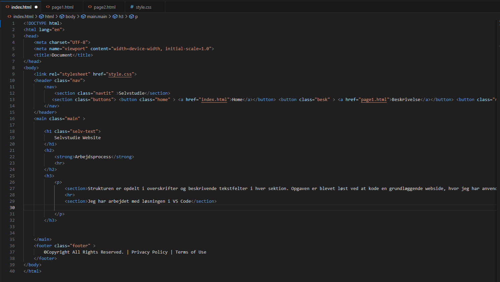
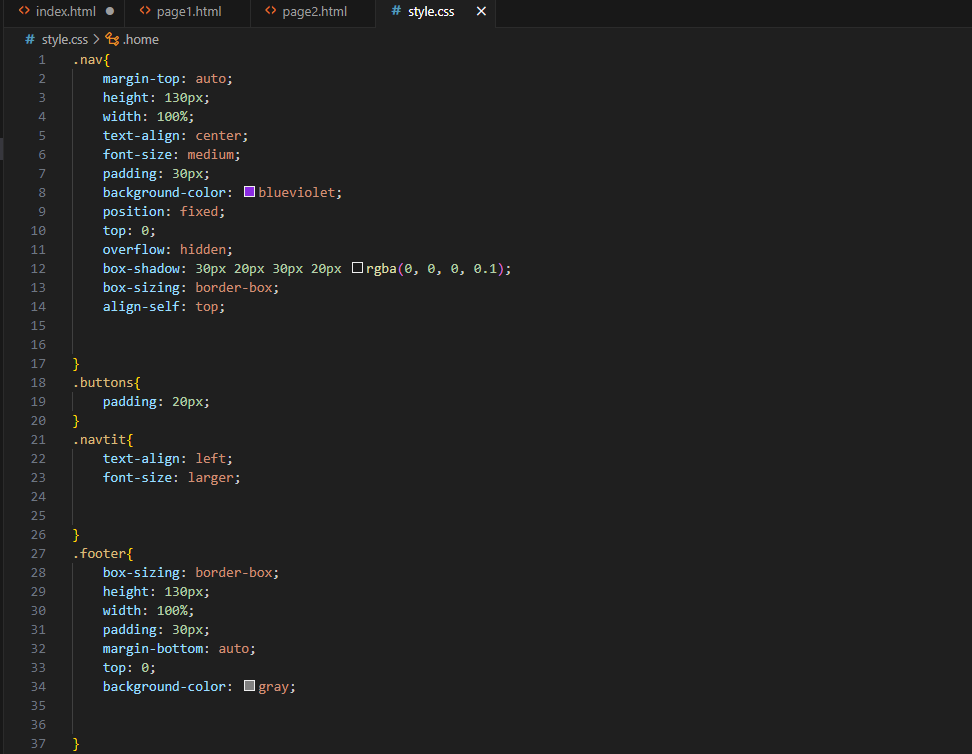

Selvstudie Website
Arbejdsprocess
Strukturen er opdelt i overskrifter og beskrivende tekstfelter i hver sektion. Opgaven er blevet løst ved at kode en grundlæggende webside, hvor jeg har anvendt HTML til opbygningen af indholdet og CSS til at style elementerne.
Jeg har arbejdet med løsningen i VS Code

-HTML-kode med opdeling i sektioner
-CSS-kode for at give designet en stilren, responsiv struktur
